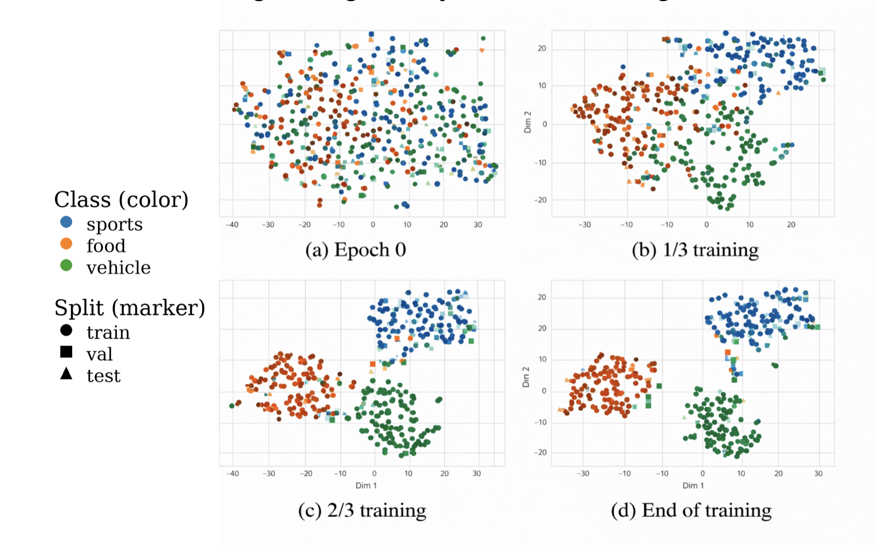

Abstract
We study how distributed functional coupling encodes visual categories in the human cortex. Using high-resolution 7T fMRI from the Natural Scenes Dataset (NSD), we construct parcel-level connectivity graphs and train a Signed Graph Neural Network that models both positive and negative interactions. Interpretability is embedded through a shared sparse edge mask and complemented by class-specific Gradient×Input saliency. The model achieves accurate multi-class decoding (sports, food, vehicle) while revealing reproducible and biologically meaningful subnetworks within ventral and dorsal pathways.
Overview
- Naturalistic image-viewing fMRI from the NSD dataset, acquired at 7T.
- COCO masks and captions are fused to define visual super-categories.
- Trial-level parcel time series are converted into functional connectivity graphs.
- A Signed GNN processes positive and negative correlations as separate graph channels.
- Explainability combines a shared sparse edge mask with class-specific saliency maps.
- Mean performance across subjects: 0.78 test accuracy and 0.88 macro-AP.
- Food shows the highest separability, followed by sports and vehicle.
- Learned subnetworks align with ventral, dorsal, and limbic visual organization.
- The framework connects machine learning performance with neuroscience interpretation.
Method
Dataset
We use the Natural Scenes Dataset, where participants view thousands of COCO images during a continuous recognition task while 7T fMRI is recorded.
Label Fusion
Each image is scored for sports, food, and vehicle using a fusion of COCO instance masks and category-related caption evidence.
Connectivity Graphs
Parcel time series are grouped into blocks, z-scored, and converted into parcel-to-parcel Pearson correlation matrices that form signed graphs.
Signed GNN + XAI
Positive and negative correlations are processed separately, then pooled for classification. Explanations come from a shared sparse mask and Gradient×Input saliency.

static/images/method_diagram.png with your exported figure or diagram.

Results
The Signed GNN progressively organizes graph embeddings into category-selective clusters and reveals interpretable subnetworks that are reproducible across subjects.
Quantitative Summary
- Mean test accuracy: 0.78
- Mean macro-average precision: 0.88
- Food AP: 0.92
- Sports AP: 0.88
- Vehicle AP: 0.84
Neuroscience Interpretation
- Food: ventral occipitotemporal and limbic-orbitofrontal regions.
- Sports: dorsal visuomotor and frontoparietal regions.
- Vehicle: ventral occipitotemporal and posterior parietal regions.


Poster / Paper
The PDF below can be embedded directly from your repository.
BibTeX
@inproceedings{karmi2026categoryselective,
title={Category-Selective Brain Networks with Graph Neural Networks},
author={Karmi, Shira and Avidan, Galia and Riklin Raviv, Tammy},
booktitle={IEEE International Symposium on Biomedical Imaging (ISBI)},
year={2026}
}
Update this entry if your final camera-ready title or publication details change.